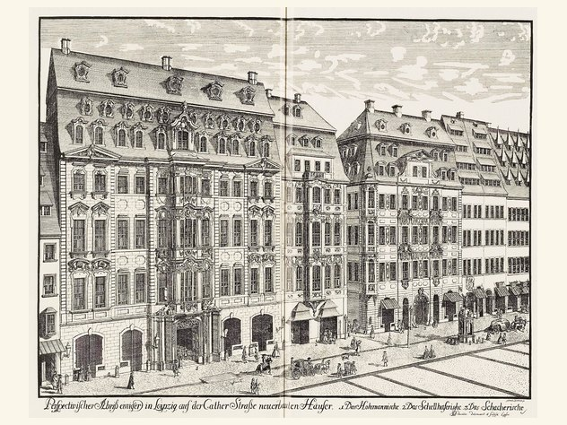
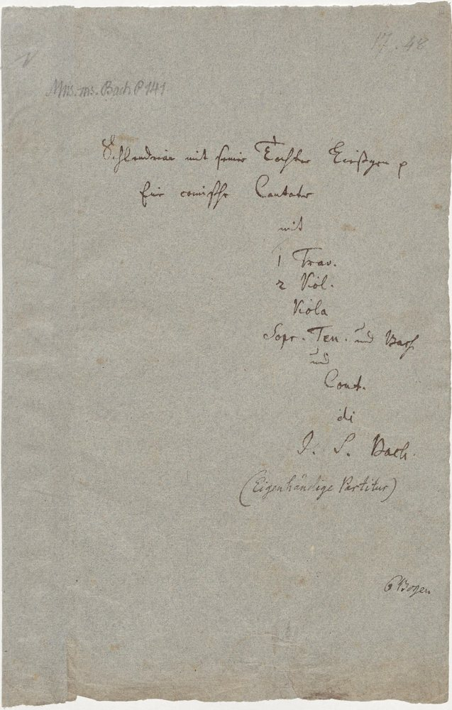

Comparing Fractions, Part 2
MA.3.FR.2.2 Identify equivalent fractions and explain why they are equivalent.
Today: compare fractions to the benchmarks one-half and 1. Dimensions Math 3B, Chapter 10, Lesson 5 · Comparing Fractions, Part 2

Leipzig, Germany · about 300 years ago

How can you compare fractions without re-cutting?
One-sixth stops before the halfway line. Seven-twelfths goes past it. So seven-twelfths is greater, and you didn't have to re-cut.
You will…
- Find half of a denominator.
- Compare a fraction to the benchmark one-half.
- Look at the missing piece to tell which fraction is closer to 1.
Why Bach?
A real print of Katharine Street in Leipzig, made about 1720. The house marked 2 was Zimmermann's coffee house. Starting in 1729, Bach led a music group that played there, and people listened while they drank coffee. The other picture is Bach's own title page for the Coffee Cantata. It names the father, Schlendrian, and his daughter, Lieschen.

Bach wrote the Coffee Cantata in the early 1730s. It is a funny story told by singers and players. A father tries to make his daughter stop drinking coffee, and she won't. In one song, Lieschen sings about how sweet her coffee tastes, and a flute plays along.
Today's math: each cup is one whole. Is it less than half full, more than half full, or almost full? Those questions let you compare without re-cutting.
Today you'll find half of a number a lot. Half means divide by 2. Type each answer, then check. You can fix any answer and check again.
Re-cut to compare
Three bars, the same length. One-fifth is shaded on the top bar. In the middle bar, each fifth is cut into 4 pieces. The bottom bar shows three-twentieths.
Think: Three Cups
🔨 Do · ✏️ WriteAt the coffee house, Lieschen, her father and a friend each have a cup. Lieschen's cup is two-ninths full. Her father's is five-sevenths full. The friend's is nine-tenths full.
Three cups of coffee as fraction tiles. Each bar is one whole cup. The shaded tiles show the coffee. The cups are cut into different-size pieces.
Show the halfway line
Press ½ Show the halfway line.
Count the cups past half
Show the missing pieces
Press Show the missing pieces.
Which cup is closest to full?
Tell how you know
Two shortcuts. The halfway line tells which cups are more than one-half. The missing piece tells which cup is closest to full.
Compare to one-half. Or look at the missing piece.
- Find half of the denominator. Half of 9 is 4 and a half. Half of 7 is 3 and a half.
- Compare each fraction to one-half. Two-ninths is less than half. Five-sevenths is more than half. The one past half is greater. One-half is a benchmark: a number we compare to.
- Both on the same side? Look at the missing pieces. Nine-tenths is missing one tenth. Eleven-twelfths is missing one twelfth. The smaller missing piece is closer to 1 whole, so eleven-twelfths is greater.
- Still stuck? Re-cut, like in Lesson 3.10.04. Re-cutting always works.
Four ways to see the three cups
Your Turn: Which Side of Half?
🔨 DoLieschen pours two more cups. One is three-tenths full. The other is six-elevenths full. Which cup has more coffee?
Two cups as fraction tiles: tenths on top, elevenths below. Under them is a box for a symbol.
Show the halfway line
Press ½ Show the halfway line.
Check three-tenths
Check six-elevenths
Compare
Drag <, > or = into the box between three-tenths and six-elevenths.
Juno Picks the Bigger Missing Piece
🔨 Do · ✏️ WriteJuno compares two cups. One is six-sevenths full. The other is eight-ninths full. Juno says, "Six-sevenths is closer to full, because sevenths are bigger pieces."
Juno's two cups as fraction tiles: sevenths on top, ninths below. Juno's symbol is already in the box.
Show the missing pieces
Press Show the missing pieces.
Name the missing pieces
Which is closer to full?
Fix Juno's symbol
Drag the right symbol into the box over Juno's.
Help Juno
Kai Stops at the Halfway Line
🔨 Do · ✏️ WriteKai compares seven-ninths and nine-elevenths. Kai says, "Both are more than half, so they are equal."
Kai's two cups as fraction tiles: ninths on top, elevenths below. Kai's symbol is already in the box.
Show the halfway line
Press ½ Show the halfway line.
Can the halfway line help?
Show the missing pieces
Press Show the missing pieces.
Compare the missing pieces
Fix Kai's symbol
Drag the right symbol into the box over Kai's.
Help Kai
Leo Finds Half of Nine
🔨 Do · ✏️ WriteLeo's cup is four-ninths full. Leo says, "Half of 9 is 4, so four-ninths is exactly one-half."
Leo's cup as fraction tiles cut into ninths. Leo's symbol is already in the box.
Show the halfway line
Press ½ Show the halfway line.
Where is half of 9?
Compare to half
Fix Leo's symbol
Drag the right symbol into the box over Leo's.
Help Leo
Which Cup Has More?
🔨 Do · ✏️ WriteOne cup is five-twelfths full. Another is seven-elevenths full. Which cup has more coffee?
Two cups as fraction tiles: twelfths on top, elevenths below. Under them is a box for a symbol.
Show the halfway line
Press ½ Show the halfway line.
Compare each cup to half
Compare
Drag <, > or = into the box between five-twelfths and seven-elevenths.
Tell how you know
The Halfway Sorter
🔨 Do · ✏️ WriteAt the end of the night, six cups are left on the coffee house tables. Sort them for the waiter: less than half full, or more than half full.
A whole cup with a gold halfway line. Under it are two boxes: less than one-half and more than one-half. Each card shows a cup as a fraction and as a little bar. A wrong card goes back and tells you why.
Problem 1 · Sort the cups
Drag each card into Less than one-half or More than one-half.
Problem 1 · Listen
Press ▶ Play the cups. Each cup plays as one note, from least to greatest.
Problem 2 · Closest to full
Problem 2 · Tell how you sorted
Prove It
✏️ WriteProblem 3 · Prove It
Almost Full
Compare ten-elevenths and eleven-twelfths. Use the missing piece.
Turn in your work
- Check the list below. Jobs 1 to 8 are required. The Bonus is optional.
- Press 📋 Gather my answers, then 📋 Copy. Or press 🖨️ Print or save as PDF.
- Open this lesson's assignment in Canvas.
- Paste your answers (or upload your PDF and journal photo), then press Submit.
All my answers
Your answers and your work on this page save on this device as you go.
Before you turn in
- I finished Jobs 1 to 8.
- I drew a halfway line on two fractions in my math journal.
- I used the missing piece to compare two fractions that were both more than half.
- I tried the Bonus. (optional)
Lesson 3.10.06 · Adding and Subtracting Fractions, Part 1
Today you compared cups of coffee. Next, you'll add and subtract fractions that have the same denominator.
Bach · Coffee Cantata: Lieschen's song
"Ah, how sweet the coffee tastes." Lieschen's tune, the flute's part and the low part, played here with a soft flute and harpsichord sound. This is the opening and Lieschen's first part of the song.
Johann Sebastian Bach, "Ei! wie schmeckt der Coffee süße," from Schweigt stille, plaudert nicht (Coffee Cantata), BWV 211. Played with a flute and harpsichord sound made for this page from Michel Rondeau's arrangement files on IMSLP (CC BY-SA 4.0). This recording is shared under the same license.